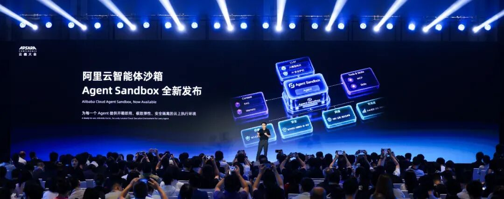

Agent不只烧Token：为什么Agent Sandbox正在变得重要
来源：微信公众号 归档日期：2026-09-30 抓取状态：成功 原文字符：7133｜配图：3 张
摘要速览
- 云栖大会观察：讨论从 Agent 能力探索走向生产落地，问题总回到聚光灯外的 Infra——模型决定能力上限，能力能否安全稳定落地靠 Infra。阿里云在主论坛发布智能体沙箱 Agent Sandbox，定义为「面向智能的新型算力形态」：Agent 不只烧 Token，沙箱是其生产化基础设施。
核心内容
（待补充）
可执行启发
（待补充）
我的想法
（待补充）
原文沉淀
目录

作者 | 凌敏
去年的行业大会，主基调还围绕在模型能力、推理成本和 AI Coding 上。Agent 很热，但大家追问更多的是它能做什么。到了今年，讨论从能力探索进一步走向生产落地。Agent 像一条新的主线，穿过每一个地方。
在今年的云栖大会上，这种体感格外明显，会场里到处都能听到 Agent，讨论也越来越具体：怎么把 Agent 做出来，怎么让它真正进入业务。
这些问题再往下追，总是会回到并不在聚光灯下的 Infra 上。因为模型决定能力的上限，但决定这些能力最后能不能安全、稳定地落下来，还得是 Infra。
在云栖大会技术主论坛上，阿里云智能集团研发副总裁、弹性计算产品线负责人吴结生发布了智能体沙箱 Agent Sandbox，并将其定义为“面向智能的新型算力形态”。阿里云给出的一个说法是，为每个 Agent 即时创造一个“可控的世界”。 这个世界里要有完整的运行时，也要管住身份、网络和数据，任务停下来以后还能保留状态。

阿里云智能集团研发副总裁、弹性计算产品线负责人吴结生发布阿里云 Agent Sandbox
Sandbox 本身并不新鲜，但随着 Agent 从 Demo 走向生产，云平台和开发者工具厂商都在重新审视这一层。动态生成的代码、难以预测的任务时长，以及执行过程中的等待和恢复，正在对运行环境提出新的要求。
在今年云栖大会的一场主题为《Agent Sandbox 助力 Agent 从 Demo 到生产级稳定运行》圆桌对谈中，来自阿里云、AMD、金山办公和前程无忧的几位嘉宾，分别从云平台、底层算力和企业实践的角度，讨论了 Agent 从 Demo 进入生产之后遇到的挑战及实战经验。很多讨论最后都指向了 Agent 需要什么样的运行环境、企业又该怎么选。而 Agent Sandbox，正在成为这两个问题绕不开的一层。
Agent 为什么还需要 Sandbox？
今天再谈 Sandbox，很容易产生一个疑问：Docker 已经很成熟了，Kubernetes 也用了十多年，为什么还需要 Sandbox？
一个对开发者来说，最直观的原因就是，代码变得没那么可信了。
放在传统软件里，一段代码是从哪里来的，通常很清楚，要么是公司内部开发，要么是经过审核的第三方依赖，责任链条相当清晰。到了 Agent 这里，它执行的代码可能是模型刚生成的，也可能来自用户输入，甚至刚从网页上抓取的。
金山办公云原生开发运维专家宾哲 把这件事概括成一句话：“AI 越强，越要入笼”。
这个“笼子”不是要把原来的容器体系推倒重来。金山办公自己的 Sandbox 底座仍然建立在 Kubernetes 体系上，阿里云 Agent Sandbox 也原生兼容 Kubernetes API。按照阿里云的设计，每个 Sandbox 可以以 Kubernetes Pod 为载体，再运行在 MicroVM 隔离环境里，把风险尽量收在单个执行环境里。
但隔离只是问题的一部分。阿里云智能集团资深技术专家杨皓然在圆桌对谈环节中提到，过去企业里的负载大致可以分成两类：长期运行的微服务，以及有明确生命周期的离线 Job。这两类负载经过多年发展，已经有了比较成熟的调度和治理体系。
Agent 的运行方式明显更随机。它下一步调用什么工具，要跑多少轮，很大程度上由模型动态决定。大量 Agent 还是间歇式执行，任务过程中会等待模型推理，也会等待 Subagent 返回结果。
等的时候，资源怎么办？如果 CPU 和内存一直占着，用户就在为等待时间付费；直接把环境销毁，任务状态又没了。原来更适合长时运行实例的调度方式，到这里就显得不那么合适。
所以阿里云这次在 Agent Sandbox 里同时做了快速创建和休眠恢复。按其公布的数据，Agent Sandbox 每分钟可创建 10 万个沙箱，基于模板创建与冷启动 P99 小于 180 毫秒；资源池预热后，热启动 P99 小于 20 毫秒；深休眠唤醒 P99 低于 600 毫秒。
当运行环境发生变化，压力还会继续往硬件层传导。
AMD 中国区销售副总裁周俊杰 提到，传统应用可能持续运行几个月，但一个 Agent 任务可能只运行几十秒，一天内还可能反复创建大量这样的环境。包括 Agent 编排、Tool Calling、RAG 检索、状态管理、Sandbox 运行和安全隔离等大量工作，更多还是落在 CPU 侧。
因此，AMD 在 EPYC 数据中心处理器上重点投入高核心数设计，帮助客户在单一机柜里承载更多 Agent 和 Sandbox；同时通过缓存、带宽、机密计算、内存加密和可信 I/O，提升数据处理效率和安全性。周俊杰把这种变化概括得更直观：未来的数据中心可能不再只是运行应用，还要运行大量“数字员工”。每一个数字员工背后，都需要算力、安全、调度和治理体系共同支撑。
不难发现，Agent 带来的变化已经不只是一种新的应用负载。上面是动态生成的任务，中间需要新的运行时，下面的 CPU、网络和存储也要跟着适配。“所以阿里云也认为，沙箱会成为继 VM 和容器之后的一种新的算力形态”，杨皓然提到。
当问题来到企业这一侧，会变得更加具体：这一层要不要自己做？什么场景值得上 Sandbox？安全、稳定和成本之间又该怎么选？
Agent 进入生产，企业如何选择运行底座
过去一年，阿里云智能集团高级产品解决方案架构师张军 能明显感觉到，客户问的问题变了。
最早，一些企业还是把 Agent 当成普通应用部署，后来开始比较开源方案和供应商方案。真正跑过一段时间以后，问题变成了用户之间怎么隔离，版本怎么平滑更新，长任务怎么休眠和恢复。
这些问题，很多团队一开始都会想着自己补。
前程无忧搜索推荐策略团队负责人林自达 提到，他们曾考虑过直接部署 OpenClaw，再自己处理用户隔离、路由和长连接。做下去才发现，工作量很快就从 Agent 本身蔓延到底层。流式连接需要处理路由，多用户需要隔离，后面还要考虑弹性、发版和更新。
对一个应用团队来说，这些事情都能做，但投入多少人长期维护，就是另外一回事。后来，他们重新算了这笔账：团队更应该把人力放在应用和业务上，如果大量时间耗在基础架构，ROI 并不高。
等 AI 招聘助手真正上线后，这笔账会容易算得多。
前程无忧的 HR 用户主要在工作时间使用产品，早上 9 点到 10 点会出现万级规模的脉冲请求。但 HR 并不会一直和 Agent 对话，使用时间又很碎片。前程无忧为每个 HR Session 分配一个独享 Sandbox，再根据使用状态切换活跃、浅休眠和深休眠。用户离开时环境可以休眠，回来后仍能恢复此前的会话数据。相关数据还会归档，用于后续审计和产品分析。
按照林自达给出的时间线，这个项目用了一个月完成 POC，随后又用三个月打磨 MVP。到这个阶段，Sandbox 已经不只是把代码“关起来”，它还承担了空闲成本控制。据介绍，进入生产后，系统可以支撑万级请求，成本也被控制在较低水平，目前单个会员每天的相关成本大约在 1 元左右。
金山办公面对的问题又不太一样。宾哲提到，他们选择 Agent 运行环境时，主要考虑 安全、成本和稳定性，不同业务也会采用不同的运行方式。
比如，面向外部用户的业务更看重安全和稳定，会把 Sandbox 作为底层运行时；一些内部业务更适合 Agent Use Sandbox，Shell 脚本等会放进沙箱执行，Agent 本身仍然跑在应用平台层；对于安全等级相对较低的场景，可以沿用原来的 Agent 使用方式，Tools 经过组装后继续运行在原有应用集群里。
在具体建设上，金山办公没有从头搭一套 Agent Infra。底层使用 Agent Sandbox 这种新形态，以及镜像缓存和 OSS 存储；往上一层是沙箱管理层，包括实例管理、沙箱管理、自定义镜像、E2B 接口和权限管控；再往上则提供代码解释器、浏览器沙箱 VNC、All-in-One 等不同形态。目前，灵犀、WPS Copilot、Web Office 都已经跑在这套沙箱底座上。
宾哲把这套方案总结为：安全靠“四道栅栏”，成本靠潮汐和分级超卖，稳定性靠多集群容灾。
安全方面，金山办公把沙箱集群和应用集群分开。两边使用独立的控制面和节点池，网络也放在不同的 VPC 里，两个集群之间禁止直连。内部客户端访问沙箱，需要统一经过 PrivateLink；沙箱实例之间默认不能互相调用。访问的来源、目标、时间和结果也都会记录下来。
成本方面，金山办公的业务白天是高峰，晚上是低谷，因此会通过 CronHPA 和 AHPA 调整预热沙箱的数量。宾哲现场展示的一条曲线里，预热数量从凌晨十几个升到早高峰的一千左右，再随着流量回落。稳定性方面，他们采用基于 ACK One 的多集群容灾，一个集群出现问题后，流量可以秒级切换到另一个集群。
当 Agent 的数量继续增加，成本的算法也会跟着变。在周俊杰看来，传统基础设施更习惯按服务器来算成本，但到了 Agent 规模化运行之后，客户可能更关心的是，完成一个 Agent Task 到底需要多少钱？ 前程无忧和金山办公的实践，已经能看到这种变化。前者通过浅休眠和深休眠应对用户碎片化使用，降低资源成本；后者根据业务潮汐调整预热沙箱数量。
杨皓然进一步指出，Agent 要实现大规模应用，不仅 Token 成本要低，执行模型决策所需的沙箱成本也要足够低。只有决策和执行的成本同时下降，更多 AI 应用才有可能被探索出来。
张军认为，这类负载也更适合公共云。过去公共云的高峰更多出现在晚上，而 Agent Serving 主要发生在工作时间。如果企业自己在数据中心里维护一朵小云，很难把这种峰谷平掉。此外，从技术角度来看，Sandbox 所需要的隔离、Checkpoint、镜像拉取和加速等能力，很多在云上已经积累多年。Agent 负载出现之后，这些原本分散在计算、存储和网络里的能力，开始被重新组合到一套运行时里。
这可以解释，为什么云厂商会成为 Sandbox 的重要玩家。包括阿里云本次发布的 Agent Sandbox，也不是一个从 0 到 1 搭出来的产品。在它之前，阿里云已经有两类 Sandbox 能力：一类来自函数计算 FC，更偏向开发者使用，通过 Developer API 提供更低门槛的调用方式；另一类建立在 Kubernetes 生态和 ACS 等基础设施之上，更面向平台工程和基础设施团队，强调资源管理、安全治理和规模化运维。
Agent Sandbox 做的，是把两套能力收进统一的产品入口和产品语义下，共享底层运行时，同时分别保留面向开发者和平台工程团队的使用方式。这样一来，应用团队可以继续用相对熟悉的方式快速创建和调用 Sandbox，平台团队则可以把它纳入原有的 Kubernetes 资源、安全和运维体系。
对阿里云来说，Agent Sandbox 更像是把过去已经存在的 Serverless、容器和云基础设施能力，重新组织成一套面向 Agent 工作负载的 Infra 底座。
更深一层的变化，是基础设施的使用者也在改变。杨皓然提到，今天很多云产品是为人操作而设计的，但未来直接使用这些产品的可能是 Agent。遇到错误时，人可以查文档、看 Dashboard、向同事请教，Agent 则需要通过 CLI 等接口直接获得故障上下文和错误线索。这意味着，面向 Agent 的运行环境还需要重新考虑信息如何呈现、问题如何被理解，以及执行过程如何获得反馈。
Agent Sandbox 管住执行环境，企业划清权责边界
前程无忧内部很早就讨论过一个问题：招聘平台连接的是求职者和招聘方，如果两边都开始让 AI 代替自己沟通，最后到底是谁在找工作？
林自达设想了一个很极端的例子：如果两个 Agent 已经把面试谈好了，真人最后却说，“刚才跟你沟通的是我的助理，我本人并没有决定去面试”。这会相当可怕。所以到现在，前程无忧在招聘沟通这类环节仍然比较谨慎。
金山办公在运维场景也留着类似的边界。AI 可以帮助分析故障、给出判断，但涉及增删改的操作，还不会完全交给它。在宾哲看来，稳定性是运维的底线，容不得一点差错。
这两个例子背后，其实已经不只是 Sandbox 的问题。Sandbox 可以限制 Agent 在什么环境里运行、能访问什么，但企业还要决定哪些事情可以交出去，哪些事情必须由人兜底。
当 Agent 开始真正参与业务流程，这个问题还会继续往组织内部走。杨皓然认为，企业要大规模使用 Agent，一方面要把自己的 Context 组织好，让企业里的信息和知识能够持续被 AI 消费；另一方面，权责边界也要提前想清楚。Agent 执行任务出了问题，最后谁负责，需要有明确的机制。
林自达把这个问题落到了更具体的人身上。在他看来，企业首先得有真正会用 AI 的员工。工具摆在那里，不意味着每个人都会写 Skill，也不意味着发现 Skill 不好之后知道怎么优化。再往前一步，还要有人知道哪些知识值得沉淀、怎么把这些知识组织起来。
当这些能力逐渐补齐，员工的角色也可能发生变化。周俊杰提到，未来员工可能会从直接操作各个系统，逐渐变成管理一个 Agent，甚至一组 Agent。相应地，企业需要补上的也不只是技术能力，还包括数据治理、安全合规、监督机制、成本控制，以及组织和流程上的调整。基础设施则要负责让这些 Agent 稳定、可靠地规模化运行。
阿里云这次把 Agent Sandbox 定义为给每个 Agent 即时创造一个“可控的世界”。Sandbox 可以把这个世界搭起来，把执行环境管住。但哪些事情交给 Agent，哪些事情仍然留给人，说到底，最后还是企业自己的选择。
《Agent Sandbox 助力 Agent 从 Demo 到生产级稳定运行》圆桌对谈金句视频已上线，完整版敬请期待。
今日好文推荐
坚决不用行业标准AGENTS.md，Claude Code惹来“封杀令”：Anthropic终于回应了，但开发者更气了
DeepSeek Harness 负责人吐槽“融资材料”吹过头：V4-Pro编程能力仅差Claude旗舰0.3%，前端服务费高达10%
归属：[[02-输入/按主题/AI与效率/_index|AI与效率]]